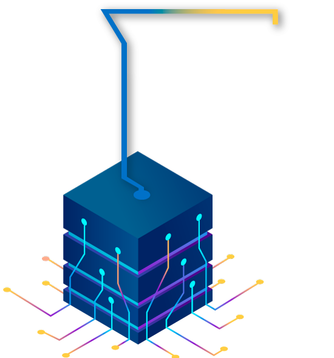
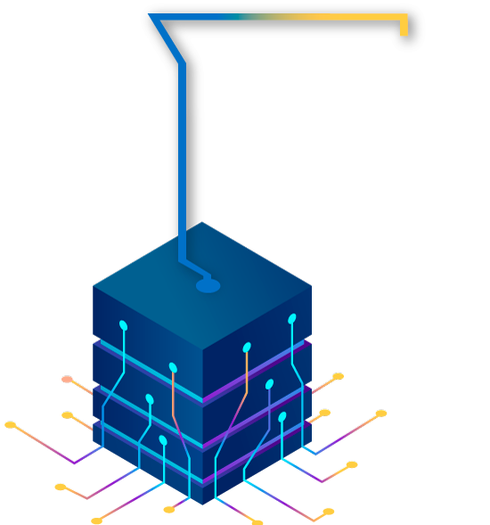

A continuación, se describen los botones de navegación del curso
Esquina superior derecha
 Permite ingresar a la pantalla inicial del curso
Permite ingresar a la pantalla inicial del curso
 Desplegar menú de actividades del curso
Desplegar menú de actividades del curso
 Opciones ingresar al glosario, bibliografía y archivos PDF del curso
Opciones ingresar al glosario, bibliografía y archivos PDF del curso
 Permite activar o desactivar el audio del curso
Permite activar o desactivar el audio del curso
Esquina inferior izquierda


Al interior de las actividades de aprendizaje, aparece este menú para consultar las demás actividades.
Centro inferior
Página anterior
Página siguiente
Pausar
Reanudar

CARACTERIZACIÓN Y APLICACIÓN DE SISTEMAS EMBEBIDOS
Bienvenidos a la unidad de aprendizaje
Caracterización y aplicación de sistemas embebidos
En esta unidad se abarcarán las características de un sistema embebido, su funcionamiento y aplicaciones. Se explicarán las fichas técnicas de los componentes, su importancia y objetivos. Además, se definirán todas las normas vigentes de seguridad y salud ocupacional con su respectiva explicación y las técnicas de narración de documentos escritos, se estudiarán las maneras de hacer y diseñar un informe basándose en las normas Icontec e IEEE.
Clic en el botón siguiente para continuar:
Objetivos:
- Entender el funcionamiento de un sistema embebido y sus partes.
- Identificar los casos en que se pueden utilizar los sistemas embebidos.
- Comprender la importancia y funcionalidad de un programa de un sistema de embebido.
- Conocer las normas de salud ocupacional.
- Analizar las partes de un trabajo escrito y los tipos de texto. Clic en el botón “Contenido temático” para continuar
Contenido temático:
- Metodología de un sistema embebido.
- Análisis para una instalación de un sistema embebido.
- Programación básica de sistema.
- Salud ocupacional en una empresa.
- Trabajos escritos enfocados en la ingeniería. Clic en el botón “Metodología” para continuar
Metodología:
Esta unidad se compone de 5 actividades de aprendizaje, en las cuales encontrará una situación a resolver acompañada de una guía de aprendizaje que le orientará en la solución del problema planteado.
Clic en el botón siguiente para continuar:CARACTERIZACIÓN Y APLICACIÓN DE SISTEMAS EMBEBIDOS
- La importancia de los sistemas embebidos en el campo de los microcontroladores.
- Normas que se deben tener en cuenta en el campo laboral.
- Técnicas para la redacción de textos en inglés y español.
- Como se debe elaborar una ficha técnica adecuadamente con todos sus parámetros.
- Como se debe realizar un informe, cual es la manera adecuada, haciendo énfasis en las normas Icontec y IEEE.
- La importancia y aplicación de la hoja de características de componentes.
- Tener la mejor actitud y disposición.
- Proponer ideas.
- Poner al servicio de la actividad todas las capacidades y destrezas.
- Hacer propias las habilidades de comprensión lectora.
- Implementar el trabajo multidisciplinario permitiendo fortalecer los planteamientos hechos.
CARACTERIZACIÓN Y APLICACIÓN DE SISTEMAS EMBEBIDOS
Los sistemas embebidos encuentran su aplicación en distintos ámbitos, sea profesionales o industriales, tales como la salud, el militar y de defensa, las telecomunicaciones entre otros.Conclusiones
- Al finalizar la guía el estudiante o aprendiz entenderá el principio de un sistema embebido.
- Tendrá la capacidad de redactar textos de carácter importante, como informes o ensayos.
- El estudiante podrá distinguir una hoja de características de componentes y cuál es su importancia en el campo laboral.
- Se tendrá claro que estipula las normas IEEE – ICONTEC.
ACTIVIDAD DE APRENDIZAJE 3
Bienvenidos a la primera actividad de aprendizaje “Metodología de un sistema embebido". A continuación, se presenta la situación a resolver dentro de esta actividad.
.
Clic en el botón siguiente:

Profesor: ¡Hola! Bienvenidos a la actividad donde abordaremos la metodología de los sistemas embebidos.
Estudiante: Muy bien profesor ¿Y de qué se tratan las actividades?

Profesor: Debes explicar el funcionamiento, las partes y las características principales de un sistema embebido.
Estudiante: Comprendo lo que debo realizar profesor, ¿Cuál es la información que necesito para resolver las actividades?
Profesor: La información necesaria para resolver la actividad, la encontrarás en el contendido disponible a continuación. Recuerda descargar y desarrollar la guía de aprendizaje.
Estudiante: ¡Está bien profesor, revisaré la información y resolveré cada actividad!
Haz clic en el botón descargar actividad:
 3
3
ACTIVIDAD DE APRENDIZAJE 2
Bienvenidos a la primera actividad de aprendizaje “Metodología de un sistema embebido". A continuación, se presenta la situación a resolver dentro de esta actividad.
.
Clic en el botón siguiente:
Profesor: ¡Hola! Bienvenidos a la actividad donde abordaremos la metodología de los sistemas embebidos.
Estudiante: Muy bien profesor ¿Y de qué se tratan las actividades?
Profesor: Debes explicar el funcionamiento, las partes y las características principales de un sistema embebido.
Estudiante: Comprendo lo que debo realizar profesor, ¿Cuál es la información que necesito para resolver las actividades?
Profesor: La información necesaria para resolver la actividad, la encontrarás en el contendido disponible a continuación. Recuerda descargar y desarrollar la guía de aprendizaje.
Estudiante: ¡Está bien profesor, revisaré la información y resolveré cada actividad!
Haz clic en el botón descargar actividad:
2
ACTIVIDAD DE APRENDIZAJE 1
Bienvenidos a la primera actividad de aprendizaje “Metodología de un sistema embebido". A continuación, se presenta la situación a resolver dentro de esta actividad.
.
Clic en el botón siguiente:
Profesor: ¡Hola! Bienvenidos a la actividad donde abordaremos la metodología de los sistemas embebidos.
Estudiante: Muy bien profesor ¿Y de qué se tratan las actividades?
Profesor: Debes explicar el funcionamiento, las partes y las características principales de un sistema embebido.
Estudiante: Comprendo lo que debo realizar profesor, ¿Cuál es la información que necesito para resolver las actividades?
Profesor: La información necesaria para resolver la actividad, la encontrarás en el contendido disponible a continuación. Recuerda descargar y desarrollar la guía de aprendizaje.
Estudiante: ¡Está bien profesor, revisaré la información y resolveré cada actividad!
Haz clic en el botón descargar actividad:
1
CARACTERIZACIÓN Y APLICACIÓN DE SISTEMAS EMBEBIDOS
¿Qué es un sistema embebido?
También conocido como sistemas integrados, hace referencia a un subsistema que se encuentra dentro de un sistema más grande; diseñado específicamente para realizar una función en particular, para la cual fue programado. Por ejemplo, el sistema de frenos de un automóvil, tiene como única función hacer detener el vehículo, este hace parte de un sistema más grande que es todo el automóvil.
Se puede decir que es una computadora (un sistema embebido), ya que se le da una orden y este realiza su función, con la gran diferencia de que una computadora es multifuncional, mientras que este tipo de subsistemas solo están diseñados para realizar una función en específico.
¿Cómo están construidos los sistemas embebidos?

CARACTERIZACIÓN Y APLICACIÓN DE SISTEMAS EMBEBIDOS

Un MCU es un microprocesador compuesto únicamente de un chip, que se emplea para dirigir varios dispositivos.
En comparación a los microprocesadores que tienen la capacidad de realizar tareas simultaneas, el MCU se dirige a una cantidad limitada de trabajos y muchas veces a un solo trabajo en específico. El usual MCU, generalmente, abarca toda la memoria y la periferia necesaria para una aplicación dada:
- RAM para el almacenamiento de datos.
- Interfaces de entrada/salida-puertos enserie y en paralelos.
- ROM o variaciones (PROM, EPROM, FLASH) para el programa.
- Otros dispositivos periféricos, como lo son: temporizadores, contadores, ADC, entre otros.
Un sistema embebido tiene un diseño semejante a la de un PC, a continuación, se describe brevemente.
CARACTERIZACIÓN Y APLICACIÓN DE SISTEMAS EMBEBIDOS
La seguridad en los sistemas embebidos
Hablar de seguridad en un sistema electrónico, y más en un sistema embebido, el cual hace uso de una red para su constante monitoreo, es un tema muy delicado a tratar, debido a que este tipo de dispositivos tienen la posibilidad de conectarse remotamente desde cualquier punto, esto es posible gracias al uso de la red, lo que conlleva a que estos pueden quedar vulnerables, pero este tema no es un factor fuerte, ya que tiene muchas debilidades en este sector, algunas carencias de seguridad pueden ser:
Finalmente, la poca seguridad de estos sistemas está siendo replanteada gracias a que poco a poco se vienen implementando con mayor frecuencia en la denominada “industria 4.0”, y esto ha demandado que los diseñadores busquen la forma de mejorar este aspecto.
Aplicación de los sistemas embebidos
Los sistemas embebidos encuentran su aplicación en distintos ámbitos, sea profesionales o industriales, tales como la salud, el militar y de defensa, las telecomunicaciones entre otros.
Entre los beneficios que proveen están:
Control total:
Conectividad y adaptabilidad:
Reducción de costos:
Corto tiempo de respuesta:
Accesibilidad:
Microcontrolador de un sistema embebido
Los microcontroladores que trabajan con un sistema embebido se encargan de ejecutar funciones de entrada, procesamiento y salida de información. Estos contienen los mismos elementos de un sistema micro procesado, pero difieren en que todos sus componentes se encuentran en un circuito integrado. Los pines que tienen son: los de entrada y salida, los de alimentación y el oscilador.
El sistema microcontrolador tiene las siguientes ventajas: tamaño reducido, bajo consumo de corriente y económico

Arquitectura de los microcontroladores
Microprocesador de un sistema embebido
Los microprocesadores son la puesta en marcha de un circuito integrado de la unidad central de procesos conocida como Unidad Central de Proceso (CPU), normalmente cuando se habla de microprocesadores se refiere a toda la CPU.
Es el que está diseñado para ejecutar las operaciones de cálculo principales del sistema. Ejecuta el código para efectuar una tarea definida específicamente y orienta el funcionamiento de los demás elementos que se encuentran a su alrededor. Un microprocesador es una activación en forma de circuito integrado (IC) de la Unidad Central de Proceso CPU de un dispositivo. Constantemente nos referimos a un microprocesador como simplemente “CPU”, y la sección de un sistema que incluye al microprocesador se le llama subsistema de CPU. Los subsistemas de memoria y entrada/salida pueden ser combinados con un subsistema de CPU para componer una computadora o sistema embebido completo. Estos subsistemas se interconectan por medio de los buses de sistema (formados a su vez por el bus de control, el bus de direcciones y el bus de datos).
Metodología para programar un microcontrolador de 8 bits
Se tomará como ejemplo el microcontrolador 16F887 de 8 bits, ya que este nos permite utilizarlo para programar un sistema de embebido y es fácil de programar en su lenguaje ensamblador, con todos estos datos se podrá comprender la utilización de un microcontrolador para realizar un sistema de embebido:
IDENTIFICADORES, TIPOS DE DATOS, VARIABLES Y CONSTANTES
 Identificadores
Identificadores
 Tipos de datos, modificadores de tipo y modificadores de acceso
Tipos de datos, modificadores de tipo y modificadores de acceso
 Declaración de variables y alcance
Declaración de variables y alcance
Especificaciones de almacenamiento de los tipos de datos
Constantes
Operadores aritméticos, relaciónales y lógicos; operador asignación; operador size of y operadores avanzados (operadores sobre bits y operador ?).
Dar clic a los botones
Tipo de datos
Creación de comentarios
Programación de puertos los digitales
Funciones para trabajar con BITs
CARACTERIZACIÓN Y APLICACIÓN DE SISTEMAS EMBEBIDOS
Resumen
En esta lección se define que es un sistema embebido, como se puede programar, cuáles son sus características, donde se puede aplicar, como está conformado y se explica su programación básica.
Se darán dos ejemplos de cómo sería un programa para un sistema de embebido utilizando el lenguaje maquina:
Después de conocer un poco la metodología de como programar un microcontrolador para un sistema de embebido, se puede entender su importancia y analizar mediante dos ejemplos de programas sencillos como sería la programación de estos, cabe aclarar que se dan los parámetros y la introducción de cómo funciona el sistema, más no implica la programación de un microcontrolador.
Ejercicio de aprendizaje

SOPA DE LETRAS
Ubique las palabras de la lección anterior
Palabras a buscar:
Ejercicio de aprendizaje
SELECCIÓN MÚLTIPLE
De acuerdo con cada enunciado, selecciona la respuesta que consideres correcta.
1. ¿Qué es un MCU?:
- a. Un MCU es Macroproceso Administración del ciclo de vida
- b. Un MCU es un microprocesador compuesto únicamente de un chip, que se emplea para dirigir varios dispositivos.
- c. Un MCU es jecuta toda la sección electrónica del sistema
2. Cuantas caracteristicas de sistema de embebida hay :
- a. 4.
- b. 8.
- c. 12.
Ejercicio de aprendizaje
SELECCIÓN MÚLTIPLE
De las siguientes imágenes, seleccione la que considere hace alusión a las características descritas a continuación:
- Estos operadores en el lenguaje C son ordenados de mayor a menor
- Los operadores ++, -- y % solo pueden usarse con datos de tipo int o char.
- El operador (++) incrementa una unidad en el valor de la variable donde se aplicó.
- El operador (--) decrementa una unidad en el valor de la variable donde se aplicó.
- El operador (%) calcula el resto de una división de dos variables.
Consultar y localizar los dispositivos de seguridad más próximos
Leer las etiquetas de seguridad

ACTIVIDAD DE APRENDIZAJE 4
Bienvenidos a la actividad de aprendizaje N° 4 “Salud ocupacional en una empresa". A continuación, se presenta la situación a resolver dentro de esta actividad.
Clic en el botón siguiente:
Profesor: ¡Hola! Bienvenidos a la cuarta actividad de esta unidad donde abordaremos el tema “Salud ocupacional en una empresa”.
Estudiante: Muy bien profesor ¿Y de qué se trata la actividad?
Profesor: Debes Identificar las normas de salud ocupacional, las posibles falencias y cuáles son las medidas de seguridad en una empresa.
Estudiante: Comprendo lo que debo realizar profesor, ¿Cuál es la información que necesito para resolver la actividad?
Profesor: La información necesaria para resolver la actividad, la encontrarás en el contendido disponible a continuación. Recuerda descargar y desarrollar la guía de aprendizaje.
Estudiante: ¡Está bien profesor, revisaré la información y resolveré la actividad!
Haz clic en el botón descargar actividad:
SALUD OCUPACIONAL EN UNA EMPRESA
NORMAS VIGENTES DE SEGURIDAD INDUSTRIAL, AMBIENTAL Y SALUD OCUPACIONAL
Resumen: En esta lección se explica la importancia de la salud ocupacional, ambiental y seguridad industrial, resaltando los puntos más importantes de estos temas, como por ejemplo las principales normas de salud industrial y normas ambientales.
Es un hecho que la seguridad en el trabajo es muy importante y con el pasar del tiempo se le ha dado más importancia a este tema, por eso desde que salió la resolución 2400 de 1979 se han presentado una serie de normas que apelan por el bienestar de los trabajadores que se relacionan con la productividad, calidad y la seguridad como un solo eslabón.
No se puede tener una productividad sin seguridad y no se puede dar calidad a costo del bienestar de los trabajadores.
Normas de seguridad industrial vigentes
Ejercicio de aprendizaje
Ahorcado
 



_________
Intentos restantes: 6
ACTIVIDAD DE APRENDIZAJE 5
Bienvenidos a la actividad de aprendizaje N° 5 “Trabajos escritos enfocados en la ingeniería". A continuación, se presenta la situación a resolver dentro de esta actividad.
Clic en el botón siguiente:
Profesor: ¡Hola! Bienvenidos a la quinta actividad de esta unidad donde abordaremos el tema “Trabajos escritos enfocados en la ingeniería”.
Estudiante: Muy bien profesor ¿Y de qué se trata la actividad?
Profesor: Debes diseñar un informe, redactar un documento e identificar partes y tipos de textos.
Estudiante: Comprendo lo que debo realizar profesor, ¿Cuál es la información que necesito para resolver la actividad?
Profesor: La información necesaria para resolver la actividad, la encontrarás en el contendido disponible a continuación. Recuerda descargar y desarrollar la guía de aprendizaje.
Estudiante: ¡Está bien profesor, revisaré la información y resolveré la actividad!
Haz clic en el botón descargar actividad:
TRABAJOS ESCRITOS ENFOCADOS EN LA INGENIERÍA
TÉCNICAS DE REDACCIÓN DE ESCRITOS EN ESPAÑOL Y/O INGLÉS
Resumen
En esta lección se explica el paso a paso de cómo se debe redactar un texto, también se explica el concepto de coherencia y concordancia. Por qué son tan importantes a la hora de redactar un texto.
¿Qué es la redacción?
La palabra redacción proviene del término latino redactio y hace referencia a poner por escrito algo sucedido, acordado o pensado con anterioridad.
La redacción requiere de dos factores muy importantes. Que son la coherencia y la cohesión textual. Dado que el orden de las palabras dentro de cualquier texto puede modificar lo que quiere expresar el autor, es necesario que el redactor organice en su mente las ideas que desee expresar a las demás personas. (Santos, s.f.)

Clic en los botones para ampliar la información.
TRABAJOS ESCRITOS ENFOCADOS EN LA INGENIERÍA
Resumen
Se explica que es una ficha técnica, para que sirve, cual son los puntos generales de una ficha técnica y se muestran respectivos ejemplos de diferentes tipos.
FICHAS TÉCNICAS
La ficha técnica es un documento muy importante a la hora de llevar un proceso industrial, ya que esta permite ver información importante cuando hay diferentes dependencias involucradas para garantizar un buen producto o servicio.
¿Qué es una ficha técnica?
¿Qué es una ficha técnica?
Es un documento que contiene la información más importante y relevante para la elaboración o comercialización de un bien o servicio, es muy importante que esta información este escrita con todos los detalles de este, ya que en el proceso de elaboración hay mucho personal involucrado y así se garantiza que no se pierda información y salga un producto de calidad.
Como hacer una ficha técnica
Como hacer una ficha técnica
Este tipo de documento no tiene unas normas rigurosas para la realización de este, ya que es un documento muy abierto y pueden variar mucho la información, sin embargo, hay unas pequeñas cosas que generalmente tienen en común, estas son:
Tipos de fichas técnicas
Tipos de fichas técnicas
Ficha de producto
Ficha de detalles constructivos
Ficha de diagrama de operaciones
Ficha de secuencia de procesos
Ficha de progresiones
Ficha de orden de producción
Ejemplos
A continuación, se muestran algunos ejemplos de ficha técnica:
TRABAJOS ESCRITOS ENFOCADOS EN LA INGENIERÍA
Resumen: En esta lección se explica que es un informe, para que sirve, los pasos que se deben tener en cuenta la hora de realizar este documento y los formatos IEEE e Icontec.
TÉCNICAS DE ELABORACIÓN DE INFORMES TÉCNICOS (NORMAS IEEE - ICONTEC)
Un informe es un documento escrito en prosa informativa, que tiene como objetivo informar y comunicar sobre un asunto en específico, ya sea de estudio o de investigación. Así pues, este tipo de documento contiene hechos verificados u obtenidos por el autor (trabajos, investigaciones, reconocimientos o estudios). Además, cuenta con una explicación concisa y precisa del tema en general, encuentra y propone la mejor solución al tema tratado y explica los métodos que se utilizan para realizarlo.
Tipos de informes
Partes del informe
Etapas
Normas IEEE
Normas Icontec
TRABAJOS ESCRITOS ENFOCADOS EN LA INGENIERÍA

APLICACIÓN DE HOJAS DE CARACTERÍSTICAS DE COMPONENTES
Una hoja de características de componentes, también conocida como hoja de datos o datasheet es un manual de instrucciones donde se encuentra información importante de componentes electrónicos. Los datasheets se caracterizan por su dificultad para ser leídos, ya que son escritos por y para ingenieros, la finalidad de un datasheet es poder encontrar toda la información de un dispositivo en él, como pautas para diseñar o cómo reparar un circuito.
Lo que está escrito en un datasheet varía mucho por el tipo de componente, pueden venir de una página para cosas básicas, como lo son conectores hasta cientos de páginas para cosas más complejas, como lo son componentes con muchas características, microcontroladores, procesadores y detalles.
Algo que es imprescindible de saber es que la mayoría de los datasheets se encuentran en inglés, esto suele desanimar mucho a sus lectores principiantes, pero una gran ventaja es que a veces toda una familia de componentes parecidos comparte el mismo datasheet.
Resumen: Se explica que es una hoja de características de componentes, cuál es su función y donde se puede aplicar. Se muestra detalladamente como está conformada con ilustraciones como ejemplos.
Ejercicio de aprendizaje
Secuencia Lógica
Escribe en el recuadro el nombre correcto del concepto:
Hay algunos casos de secciones específicas de circuitos digitales, los más relevantes son las tablas de verdad y los diagramas de time
Un diagrama de tiempo es básicamente un gráfico que permite medir el tiempo en función del estado lógico.
- Nombre del producto, objeto o servicio.
- Clasificación del producto, objeto o servicio.
- Información relevante del producto, objeto o servicio.


 Herramientas para trabajo en redes eléctricas de alta y baja tensión, aéreas y subterráneas
Herramientas para trabajo en redes eléctricas de alta y baja tensión, aéreas y subterráneas